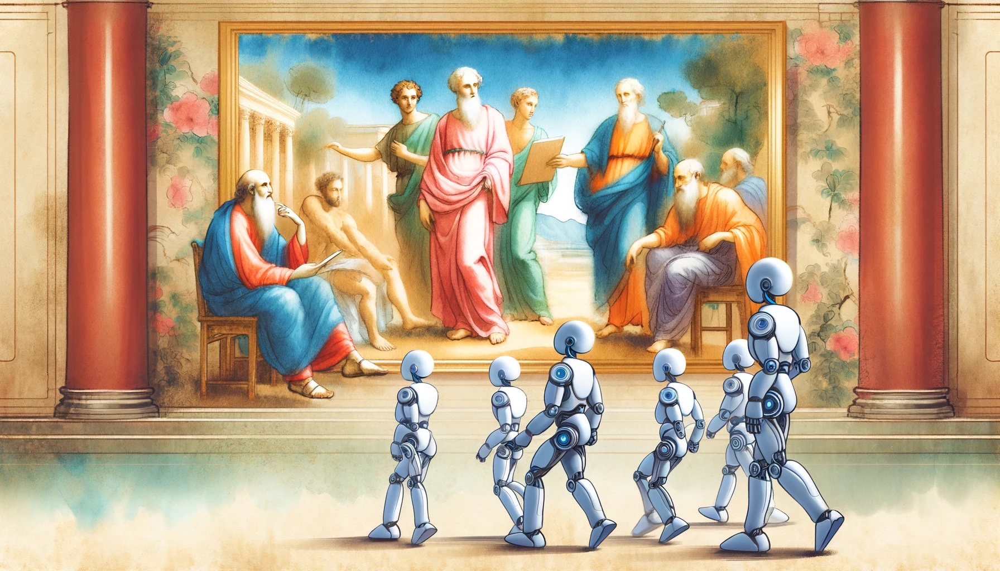
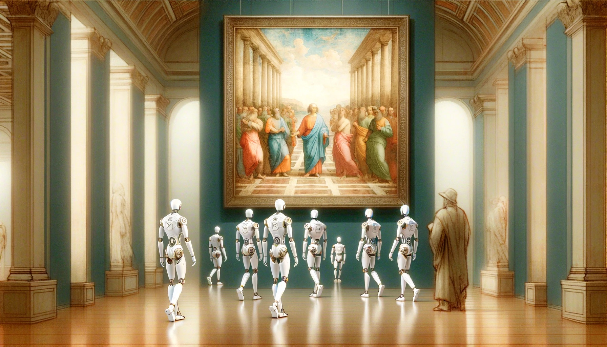

Following the initiation of SocraSynth, we now venture into the realm of RAFEL, guiding robots to elevate their communal reasoning abilities. This augmentation aims to bolster their collective knowledge and enhance their performance in specific tasks. The scene we envision portrays a diverse assembly of robots (LLMs) as they endeavor to comprehend a masterpiece by Raphael. Among them, certain robots demonstrate proficiency, while others struggle. The critical question arises: how can these less capable LLMs utilize retrospective and adaptive learning to catch up?
RAFEL provides the framework for such learning. It empowers robots with less innate understanding to analyze their interactions with data and user feedback, identifying shortcomings in their interpretive capabilities. Through this continuous analysis, they can pinpoint specific areas of improvement. The adaptive nature of RAFEL then allows these LLMs to integrate new information and strategies, effectively 'learning from the past' to enhance future performance.
Moreover, RAFEL's commitment to evolving learning ensures that these robots are not static entities. They are designed to progressively refine their algorithms and expand their databases through active data augmentation, thus progressively bridging the gap in comprehension.
In essence, RAFEL's approach to learning is not merely about immediate adjustments but also about long-term, sustained development. It ensures that all robots, regardless of their starting point, have the potential to reach a level of understanding that allows them to interpret and interact with complex stimuli, such as Raphael's artwork, with increasing depth and nuance.
